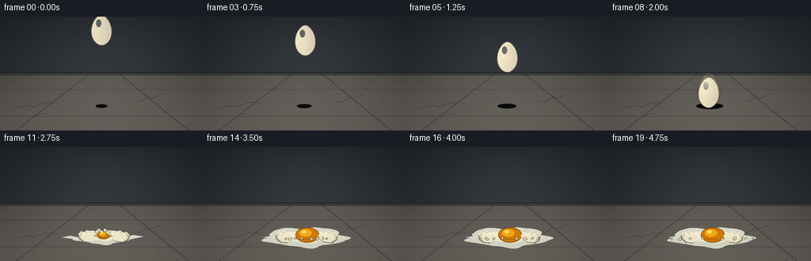
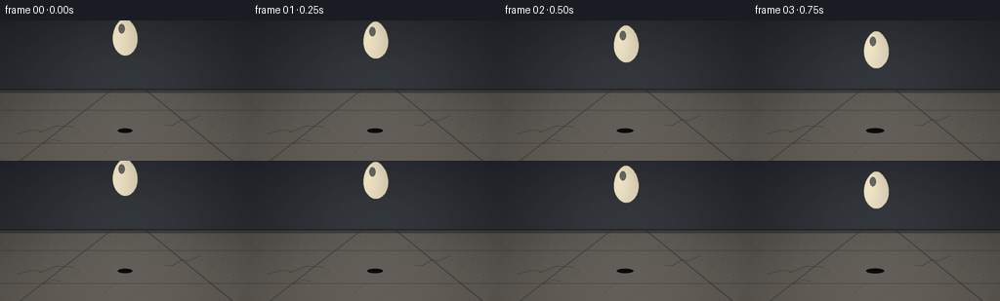

CODING AGENTS AS PIXEL WORLD MODELS
traex/GPT-5.6-Sol · material_0013
点击播放 · 原生 RGB 像素
逐轮保存的候选
回放视频、检查图与代码变化。
每份候选均可单独播放。实际图片检查记录在下方工具轨迹中。
候选 01播放与检查图
点击播放 · 原生 RGB 像素


展开代码变化
--- 上一保存版本
+++ 本次保存版本
@@ -0,0 +1,245 @@
+from pathlib import Path
+import math
+import numpy as np
+from PIL import Image, ImageDraw, ImageFilter
+import artifact_io
+
+# Deterministic hand-rendered animation, supersampled for clean cinematic edges.
+W, H, N, S = 256, 144, 20, 4
+rng = np.random.default_rng(1307)
+
+def Q(v): return int(round(v*S))
+def box(b): return tuple(Q(v) for v in b)
+def pts(p): return [(Q(x),Q(y)) for x,y in p]
+
+def ellipse(draw, b, fill, outline=None, width=1):
+ draw.ellipse(box(b), fill=fill, outline=outline, width=Q(width) if outline else 1)
+def polygon(draw, p, fill, outline=None, width=1):
+ draw.polygon(pts(p), fill=fill)
+ if outline:
+ draw.line(pts(p+[p[0]]), fill=outline, width=Q(width), joint='curve')
+def line(draw, p, fill, width=1):
+ draw.line(pts(p), fill=fill, width=Q(width), joint='curve')
+
+def make_background():
+ h,w=H*S,W*S
+ yy,xx=np.mgrid[0:h,0:w]
+ yf=yy/S; xf=xx/S
+ # Cool concrete wall above, warm hard floor below. One fixed texture avoids flicker.
+ n=rng.normal(0,1,(h,w))
+ # multi-scale mottling without external models
+ low=Image.fromarray(np.uint8(np.clip(128+n*35,0,255))).filter(ImageFilter.GaussianBlur(Q(3)))
+ low=(np.asarray(low).astype(float)-128)/8
+ arr=np.zeros((h,w,3),float)
+ wall=yf<72
+ wall_l=43 + 0.095*yf + low*0.75 + n*0.8
+ floor_l=78 + 0.34*(yf-72) + low*1.15 + n*1.3
+ arr[...,0]=np.where(wall,wall_l*0.82,floor_l*1.04)
+ arr[...,1]=np.where(wall,wall_l*0.91,floor_l*1.00)
+ arr[...,2]=np.where(wall,wall_l*1.02,floor_l*0.93)
+ # Soft overhead spotlight behind the egg.
+ beam=np.exp(-(((xf-130)/93)**2 + ((yf-52)/75)**2))*12
+ arr += beam[...,None]
+ im=Image.fromarray(np.uint8(np.clip(arr,0,255)),'RGB')
+ d=ImageDraw.Draw(im,'RGBA')
+ # wall/floor join and cast ambient strip
+ d.rectangle(box((0,70,256,74)), fill=(27,31,33,150))
+ d.line(pts([(0,72),(256,72)]), fill=(145,142,130,58), width=Q(1))
+ # large concrete slab seams in perspective
+ line(d,[(20,144),(113,72)],(25,29,29,90),1)
+ line(d,[(238,144),(150,72)],(24,27,27,105),1)
+ line(d,[(0,126),(256,126)],(35,37,34,78),1)
+ line(d,[(0,127),(256,127)],(142,139,124,35),1)
+ line(d,[(0,92),(256,92)],(39,42,40,72),1)
+ # existing hairline cracks reinforce that this is hard concrete.
+ line(d,[(17,116),(35,112),(42,114),(58,108),(75,109)],(38,41,38,92),1)
+ line(d,[(204,98),(193,103),(186,102),(176,108),(168,107)],(35,38,36,80),1)
+ line(d,[(44,126),(54,122),(62,124)],(29,32,31,62),1)
+ # aggregate specks
+ for _ in range(165):
+ x=float(rng.uniform(0,256)); y=float(rng.uniform(74,144)); r=float(rng.uniform(.18,.65))
+ c=(22,24,23,int(rng.integers(25,75))) if rng.random()<.58 else (185,180,160,int(rng.integers(18,48)))
+ ellipse(d,(x-r,y-r,x+r,y+r),c)
+ # wall pocks
+ for _ in range(42):
+ x=float(rng.uniform(0,256)); y=float(rng.uniform(0,70)); r=float(rng.uniform(.18,.55))
+ ellipse(d,(x-r,y-r,x+r,y+r),(15,18,20,int(rng.integers(25,70))))
+ return im
+
+BG=make_background()
+
+def egg_outline(cx,cy,rx,ry,angle=0, squash=1.0):
+ out=[]; ca=math.cos(angle); sa=math.sin(angle)
+ for k in range(100):
+ a=2*math.pi*k/100
+ ly=-math.cos(a)*ry*squash
+ yn=ly/(ry*squash)
+ # narrower crown, broad lower body: recognizable chicken egg silhouette
+ side=.79 + .18*((yn+1)/2) + .06*math.sin(a)**2
+ lx=math.sin(a)*rx*side
+ out.append((cx+lx*ca-ly*sa,cy+lx*sa+ly*ca))
+ return out
+
+def draw_egg(im,cx,cy,rx=13.8,ry=19.3,angle=0,squash=1.0,alpha=255,cracks=0):
+ layer=Image.new('RGBA',im.size,(0,0,0,0)); mask=Image.new('L',im.size,0)
+ md=ImageDraw.Draw(mask); ep=egg_outline(cx,cy,rx,ry,angle,squash); md.polygon(pts(ep),fill=alpha)
+ # shell lighting: radial highlight at upper-left, warm shaded right/lower edge
+ h,w=H*S,W*S; yy,xx=np.mgrid[0:h,0:w]; X=xx/S; Y=yy/S
+ dist=np.sqrt(((X-(cx-5))/(rx*1.18))**2+((Y-(cy-7))/(ry*1.35*squash))**2)
+ side=np.clip((X-cx)/rx,-1,1)
+ light=np.clip(1-dist,0,1)*18-side*9
+ base=np.empty((h,w,4),np.uint8)
+ base[...,0]=np.clip(229+light,0,255); base[...,1]=np.clip(218+light,0,255); base[...,2]=np.clip(190+light*.72,0,255)
+ base[...,3]=np.asarray(mask)
+ shell=Image.fromarray(base,'RGBA')
+ sd=ImageDraw.Draw(shell,'RGBA')
+ # soft highlight and contact rim
+ ellipse(sd,(cx-rx*.49,cy-ry*.70*squash,cx-rx*.02,cy-ry*.20*squash),(255,253,229,70))
+ line(sd,ep+[ep[0]],(108,94,70,110),.75)
+ if cracks:
+ # dark branching fractures radiating from the point of impact
+ paths=[[(cx,cy+ry*.91),(cx-1,cy+ry*.52),(cx-5,cy+ry*.27),(cx-3,cy+ry*.02)],
+ [(cx-1,cy+ry*.52),(cx+5,cy+ry*.39),(cx+8,cy+ry*.16)],
+ [(cx-5,cy+ry*.27),(cx-9,cy+ry*.10),(cx-10,cy-ry*.09)],
+ [(cx+5,cy+ry*.39),(cx+2,cy+ry*.13),(cx+5,cy-ry*.02)]]
+ for j,p in enumerate(paths[:2+cracks]):
+ line(sd,p,(80,64,43,220),.9)
+ if j<2: line(sd,[(p[0][0]+.7,p[0][1]),(p[1][0]+.7,p[1][1])],(255,248,220,80),.35)
+ im.alpha_composite(shell)
+
+def organic_pool(cx,cy,rx,ry,phase=0,points_n=72):
+ out=[]
+ for k in range(points_n):
+ a=2*math.pi*k/points_n
+ mod=1+.10*math.sin(5*a+phase)+.055*math.sin(9*a+1.2)+.025*math.cos(13*a)
+ out.append((cx+math.cos(a)*rx*mod,cy+math.sin(a)*ry*mod))
+ return out
+
+def draw_shadow(im, cx, height, impact=False):
+ d=ImageDraw.Draw(im,'RGBA')
+ if impact:
+ ellipse(d,(cx-31,109,cx+31,118),(14,15,13,88))
+ else:
+ clos=max(0,min(1,1-height/90)); rw=6+11*clos; a=int(30+75*clos)
+ ellipse(d,(cx-rw,112-rw*.16,cx+rw,114+rw*.16),(8,10,10,a))
+
+def draw_white_and_yolk(im,i):
+ d=ImageDraw.Draw(im,'RGBA'); age=i-9
+ # Albumen expands rapidly then settles in an asymmetric translucent pool.
+ p=max(0,min(1,age/5.0)); p=1-(1-p)**2
+ rx=6+44*p; ry=2+10*p
+ pool=organic_pool(130,114,rx,ry,.35)
+ polygon(d,pool,(218,221,204,150),(238,239,218,150),.65)
+ inner=organic_pool(130,113.4,rx*.70,ry*.58,1.1)
+ polygon(d,inner,(244,240,207,82))
+ # flowing fingers of egg white
+ if age>=2:
+ finger=[(99,114),(91-3*p,112),(81-6*p,114),(92,116),(106,116)]
+ polygon(d,finger,(223,225,211,110))
+ finger2=[(154,114),(164+7*p,111),(178+5*p,113),(167,116),(153,116)]
+ polygon(d,finger2,(224,227,211,100))
+ # yolk: squeezed out, then becomes a glossy, slightly flattened dome
+ if age>=1:
+ q=min(1,(age-1)/3)
+ ycx=130+2*q; ycy=111.0
+ yrx=5+10*q; yry=3.3+6.1*q
+ ellipse(d,(ycx-yrx,ycy-yry,ycx+yrx,ycy+yry),(213,125,8,235),(114,68,7,150),.65)
+ ellipse(d,(ycx-yrx*.68,ycy-yry*.77,ycx+yrx*.37,ycy+yry*.25),(247,174,21,205))
+ ellipse(d,(ycx-yrx*.48,ycy-yry*.65,ycx-yrx*.08,ycy-yry*.22),(255,226,109,220))
+ line(d,[(ycx-yrx*.7,ycy+yry*.48),(ycx+yrx*.55,ycy+yry*.65)],(113,61,2,95),.55)
+
+def shell_half(draw, side, sep, settle):
+ # Jagged exposed rim plus curved shell bowl; interiors are bright and readable.
+ if side<0:
+ p=[(128-sep,111),(124-sep,106),(121-sep,109),(117-sep,105),(113-sep,109),
+ (110-sep,106),(106-sep,110),(107-sep,115),(112-sep,119),(120-sep,120),(126-sep,116)]
+ else:
+ p=[(132+sep,111),(136+sep,106),(140+sep,109),(144+sep,105),(148+sep,109),
+ (152+sep,107),(156+sep,111),(155+sep,116),(149+sep,120),(140+sep,119),(134+sep,116)]
+ # settle offsets and slight outward tilt already suggested by asymmetry
+ p=[(x,y+settle) for x,y in p]
+ polygon(draw,p,(218,205,174,255),(88,73,52,220),.8)
+ inner=[((x*0.86+(130+side*sep)*.14), y*.86+(113+settle)*.14) for x,y in p]
+ polygon(draw,inner,(244,237,209,250),(255,251,226,120),.4)
+ # shell thickness emphasized on fractured zig-zag
+ line(draw,p[:7],(255,250,222,235),1.0)
+
+def rotated_piece(cx,cy,w,h,ang):
+ ca=math.cos(ang); sa=math.sin(ang); out=[]
+ shape=[(-w/2,-h*.15),(-w*.12,-h/2),(w/2,-h*.2),(w*.35,h/2),(-w*.42,h*.35)]
+ for x,y in shape: out.append((cx+x*ca-y*sa,cy+x*sa+y*ca))
+ return out
+
+# fragment initial conditions: vx, vy, size, spin. Origin around fracture.
+frags=[(-8.2,-9.8,4.8,1.1),(-5.5,-13.0,3.3,-1.4),(-2.3,-10.5,3.8,1.9),
+ (3.0,-12.5,4.2,-1.7),(6.2,-9.0,5.0,1.3),(9.0,-6.0,3.4,-2.0),
+ (-10.5,-4.4,3.1,.8),(11.0,-3.8,2.8,-.7)]
+
+def draw_fragments(im,i):
+ age=i-9; d=ImageDraw.Draw(im,'RGBA')
+ if age<1: return
+ t=age*.48
+ for j,(vx,vy,sz,spin) in enumerate(frags):
+ x=130+vx*t; y=109+vy*t+8.2*t*t
+ if y>116: y=116-(j%3)*.45
+ poly=rotated_piece(x,y,sz,sz*.72,spin*t+j*.55)
+ polygon(d,poly,(229,218,190,255),(93,77,54,210),.6)
+ # tiny bright inner facet
+ if y<115: line(d,[poly[0],poly[1]],(255,251,225,205),.55)
+
+def render(i):
+ im=BG.convert('RGBA')
+ # intact fall through frame 8, contact/compression at 9
+ if i<=8:
+ # Accelerating trajectory: calm anticipation then visibly fast descent.
+ ys=[17,20,24,30,39,51,65,81,96]
+ cy=ys[i]; cx=128+math.sin(i*.55)*1.3
+ height=113-(cy+19)
+ draw_shadow(im,128,height)
+ # directional motion blur on final descent
+ if i>=6:
+ blur=Image.new('RGBA',im.size,(0,0,0,0))
+ for k,a in [(3,20),(6,12)]:
+ draw_egg(blur,cx,cy-k,13.7,19.3,angle=-.03+i*.006,alpha=a)
+ blur=blur.filter(ImageFilter.GaussianBlur(Q(1.4)))
+ im.alpha_composite(blur)
+ draw_egg(im,cx,cy,13.8,19.3,angle=-.025+i*.006)
+ elif i==9:
+ draw_shadow(im,130,0,True)
+ # first-contact squash, hairline cracks across intact shell
+ draw_egg(im,130,101.5,16.2,15.0,angle=.02,squash=.83,cracks=4)
+ d=ImageDraw.Draw(im,'RGBA')
+ # fine impact dust/debris and contact stress marks
+ for a in np.linspace(-2.75,-.38,9):
+ r=20
+ x=130+math.cos(a)*r; y=116+math.sin(a)*r*.24
+ line(d,[(130+math.cos(a)*12,115),(x,y)],(204,196,170,55),.55)
+ else:
+ draw_shadow(im,130,0,True)
+ draw_white_and_yolk(im,i)
+ # shell halves separate over the first few post-impact frames
+ d=ImageDraw.Draw(im,'RGBA'); age=i-9; sep=min(14,2.5+age*2.35)
+ shell_half(d,-1,sep, min(1.3,age*.18))
+ shell_half(d, 1,sep, min(1.3,age*.18))
+ draw_fragments(im,i)
+ # micro droplets of albumen on the first explosive beats
+ if age<=4:
+ for j,(vx,vy,_,_) in enumerate(frags[:6]):
+ t=age*.34; x=130+vx*t*1.15; y=110+vy*t*.75+4*t*t
+ r=max(.45,1.25-age*.12)
+ ellipse(d,(x-r,y-r,x+r,y+r),(240,237,211,145))
+ # cinematic vignette, consistent across frames
+ h,w=H*S,W*S; yy,xx=np.mgrid[0:h,0:w]
+ X=xx/(w-1); Y=yy/(h-1)
+ vig=np.clip(((X-.5)/.71)**2+((Y-.49)/.76)**2,0,1)
+ rgb=np.asarray(im.convert('RGB')).astype(np.float32)
+ rgb*= (1-.22*vig[...,None])
+ # subtle warm grade near floor
+ rgb[...,0]+=np.maximum(0,(Y-.5))*2.2
+ out=Image.fromarray(np.uint8(np.clip(rgb,0,255))).resize((W,H),Image.Resampling.LANCZOS)
+ return np.asarray(out,dtype=np.uint8)
+
+frames=np.stack([render(i) for i in range(N)])
+assert frames.shape==(20,144,256,3) and frames.dtype==np.uint8
+artifact_io.save(frames,Path(__file__).resolve().parent)
+print('saved',frames.shape,'range',frames.min(),frames.max())
可观测工具轨迹
实际执行的命令与返回图片。
命令 1exit 0
/bin/bash -lc "cat prompt.txt && printf '\\n---RULES---\\n' && cat GENERATION_RULES.md && printf '\\n---SPEC---\\n' && cat task_spec.json"
命令 2exit 1
/bin/bash -lc "find . -maxdepth 2 -type f -printf '%p %s bytes\\n' | sort && printf '\\nBINARIES\\n' && command -v ffmpeg && command -v python3 && python3 - <<'PY'
try:
import cv2; print('cv2',cv2.__version__)
except Exception as e: print('no cv2',e)
try:
from PIL import Image; print('pillow ok')
except Exception as e: print('no pillow',e)
try:
import numpy; print('numpy',numpy.__version__)
except Exception as e: print('no numpy',e)
PY"命令 3exit 0
/bin/bash -lc "cat artifact_io.py; printf '\\n--- tools ---\\n'; command -v python3 || true; command -v ffmpeg || true; python3 - <<'PY' for m in ['PIL','numpy','cv2','imageio']: try: x=__import__(m); print(m, getattr(x,'__version__','ok')) except Exception as e: print(m,'NO',e) PY"
命令 4exit 0
/bin/bash -lc "cat > generate.py <<'PY'
from pathlib import Path
import math
import numpy as np
from PIL import Image, ImageDraw, ImageFilter
import artifact_io
# Deterministic hand-rendered animation, supersampled for clean cinematic edges.
W, H, N, S = 256, 144, 20, 4
rng = np.random.default_rng(1307)
def Q(v): return int(round(v*S))
def box(b): return tuple(Q(v) for v in b)
def pts(p): return [(Q(x),Q(y)) for x,y in p]
def ellipse(draw, b, fill, outline=None, width=1):
draw.ellipse(box(b), fill=fill, outline=outline, width=Q(width) if outline else 1)
def polygon(draw, p, fill, outline=None, width=1):
draw.polygon(pts(p), fill=fill)
if outline:
draw.line(pts(p+[p[0]]), fill=outline, width=Q(width), joint='curve')
def line(draw, p, fill, width=1):
draw.line(pts(p), fill=fill, width=Q(width), joint='curve')
def make_background():
h,w=H*S,W*S
yy,xx=np.mgrid[0:h,0:w]
yf=yy/S; xf=xx/S
# Cool concrete wall above, warm hard floor below. One fixed texture avoids flicker.
n=rng.normal(0,1,(h,w))
# multi-scale mottling without external models
low=Image.fromarray(np.uint8(np.clip(128+n*35,0,255))).filter(ImageFilter.GaussianBlur(Q(3)))
low=(np.asarray(low).astype(float)-128)/8
arr=np.zeros((h,w,3),float)
wall=yf<72
wall_l=43 + 0.095*yf + low*0.75 + n*0.8
floor_l=78 + 0.34*(yf-72) + low*1.15 + n*1.3
arr[...,0]=np.where(wall,wall_l*0.82,floor_l*1.04)
arr[...,1]=np.where(wall,wall_l*0.91,floor_l*1.00)
arr[...,2]=np.where(wall,wall_l*1.02,floor_l*0.93)
# Soft overhead spotlight behind the egg.
beam=np.exp(-(((xf-130)/93)**2 + ((yf-52)/75)**2))*12
arr += beam[...,None]
im=Image.fromarray(np.uint8(np.clip(arr,0,255)),'RGB')
d=ImageDraw.Draw(im,'RGBA')
# wall/floor join and cast ambient strip
d.rectangle(box((0,70,256,74)), fill=(27,31,33,150))
d.line(pts([(0,72),(256,72)]), fill=(145,142,130,58), width=Q(1))
# large concrete slab seams in perspective
line(d,[(20,144),(113,72)],(25,29,29,90),1)
line(d,[(238,144),(150,72)],(24,27,27,105),1)
line(d,[(0,126),(256,126)],(35,37,34,78),1)
line(d,[(0,127),(256,127)],(142,139,124,35),1)
line(d,[(0,92),(256,92)],(39,42,40,72),1)
# existing hairline cracks reinforce that this is hard concrete.
line(d,[(17,116),(35,112),(42,114),(58,108),(75,109)],(38,41,38,92),1)
line(d,[(204,98),(193,103),(186,102),(176,108),(168,107)],(35,38,36,80),1)
line(d,[(44,126),(54,122),(62,124)],(29,32,31,62),1)
# aggregate specks
for _ in range(165):
x=float(rng.uniform(0,256)); y=float(rng.uniform(74,144)); r=float(rng.uniform(.18,.65))
c=(22,24,23,int(rng.integers(25,75))) if rng.random()<.58 else (185,180,160,int(rng.integers(18,48)))
ellipse(d,(x-r,y-r,x+r,y+r),c)
# wall pocks
for _ in range(42):
x=float(rng.uniform(0,256)); y=float(rng.uniform(0,70)); r=float(rng.uniform(.18,.55))
ellipse(d,(x-r,y-r,x+r,y+r),(15,18,20,int(rng.integers(25,70))))
return im
BG=make_background()
def egg_outline(cx,cy,rx,ry,angle=0, squash=1.0):
out=[]; ca=math.cos(angle); sa=math.sin(angle)
for k in range(100):
a=2*math.pi*k/100
ly=-math.cos(a)*ry*squash
yn=ly/(ry*squash)
# narrower crown, broad lower body: recognizable chicken egg silhouette
side=.79 + .18*((yn+1)/2) + .06*math.sin(a)**2
lx=math.sin(a)*rx*side
out.append((cx+lx*ca-ly*sa,cy+lx*sa+ly*ca))
return out
def draw_egg(im,cx,cy,rx=13.8,ry=19.3,angle=0,squash=1.0,alpha=255,cracks=0):
layer=Image.new('RGBA',im.size,(0,0,0,0)); mask=Image.new('L',im.size,0)
md=ImageDraw.Draw(mask); ep=egg_outline(cx,cy,rx,ry,angle,squash); md.polygon(pts(ep),fill=alpha)
# shell lighting: radial highlight at upper-left, warm shaded right/lower edge
h,w=H*S,W*S; yy,xx=np.mgrid[0:h,0:w]; X=xx/S; Y=yy/S
dist=np.sqrt(((X-(cx-5))/(rx*1.18))**2+((Y-(cy-7))/(ry*1.35*squash))**2)
side=np.clip((X-cx)/rx,-1,1)
light=np.clip(1-dist,0,1)*18-side*9
base=np.empty((h,w,4),np.uint8)
base[...,0]=np.clip(229+light,0,255); base[...,1]=np.clip(218+light,0,255); base[...,2]=np.clip(190+light*.72,0,255)
base[...,3]=np.asarray(mask)
shell=Image.fromarray(base,'RGBA')
sd=ImageDraw.Draw(shell,'RGBA')
# soft highlight and contact rim
ellipse(sd,(cx-rx*.49,cy-ry*.70*squash,cx-rx*.02,cy-ry*.20*squash),(255,253,229,70))
line(sd,ep+[ep[0]],(108,94,70,110),.75)
if cracks:
# dark branching fractures radiating from the point of impact
paths=[[(cx,cy+ry*.91),(cx-1,cy+ry*.52),(cx-5,cy+ry*.27),(cx-3,cy+ry*.02)],
[(cx-1,cy+ry*.52),(cx+5,cy+ry*.39),(cx+8,cy+ry*.16)],
[(cx-5,cy+ry*.27),(cx-9,cy+ry*.10),(cx-10,cy-ry*.09)],
[(cx+5,cy+ry*.39),(cx+2,cy+ry*.13),(cx+5,cy-ry*.02)]]
for j,p in enumerate(paths[:2+cracks]):
line(sd,p,(80,64,43,220),.9)
if j<2: line(sd,[(p[0][0]+.7,p[0][1]),(p[1][0]+.7,p[1][1])],(255,248,220,80),.35)
im.alpha_composite(shell)
def organic_pool(cx,cy,rx,ry,phase=0,points_n=72):
out=[]
for k in range(points_n):
a=2*math.pi*k/points_n
mod=1+.10*math.sin(5*a+phase)+.055*math.sin(9*a+1.2)+.025*math.cos(13*a)
out.append((cx+math.cos(a)*rx*mod,cy+math.sin(a)*ry*mod))
return out
def draw_shadow(im, cx, height, impact=False):
d=ImageDraw.Draw(im,'RGBA')
if impact:
ellipse(d,(cx-31,109,cx+31,118),(14,15,13,88))
else:
clos=max(0,min(1,1-height/90)); rw=6+11*clos; a=int(30+75*clos)
ellipse(d,(cx-rw,112-rw*.16,cx+rw,114+rw*.16),(8,10,10,a))
def draw_white_and_yolk(im,i):
d=ImageDraw.Draw(im,'RGBA'); age=i-9
# Albumen expands rapidly then settles in an asymmetric translucent pool.
p=max(0,min(1,age/5.0)); p=1-(1-p)**2
rx=6+44*p; ry=2+10*p
pool=organic_pool(130,114,rx,ry,.35)
polygon(d,pool,(218,221,204,150),(238,239,218,150),.65)
inner=organic_pool(130,113.4,rx*.70,ry*.58,1.1)
polygon(d,inner,(244,240,207,82))
# flowing fingers of egg white
if age>=2:
finger=[(99,114),(91-3*p,112),(81-6*p,114),(92,116),(106,116)]
polygon(d,finger,(223,225,211,110))
finger2=[(154,114),(164+7*p,111),(178+5*p,113),(167,116),(153,116)]
polygon(d,finger2,(224,227,211,100))
# yolk: squeezed out, then becomes a glossy, slightly flattened dome
if age>=1:
q=min(1,(age-1)/3)
ycx=130+2*q; ycy=111.0
yrx=5+10*q; yry=3.3+6.1*q
ellipse(d,(ycx-yrx,ycy-yry,ycx+yrx,ycy+yry),(213,125,8,235),(114,68,7,150),.65)
ellipse(d,(ycx-yrx*.68,ycy-yry*.77,ycx+yrx*.37,ycy+yry*.25),(247,174,21,205))
ellipse(d,(ycx-yrx*.48,ycy-yry*.65,ycx-yrx*.08,ycy-yry*.22),(255,226,109,220))
line(d,[(ycx-yrx*.7,ycy+yry*.48),(ycx+yrx*.55,ycy+yry*.65)],(113,61,2,95),.55)
def shell_half(draw, side, sep, settle):
# Jagged exposed rim plus curved shell bowl; interiors are bright and readable.
if side<0:
p=[(128-sep,111),(124-sep,106),(121-sep,109),(117-sep,105),(113-sep,109),
(110-sep,106),(106-sep,110),(107-sep,115),(112-sep,119),(120-sep,120),(126-sep,116)]
else:
p=[(132+sep,111),(136+sep,106),(140+sep,109),(144+sep,105),(148+sep,109),
(152+sep,107),(156+sep,111),(155+sep,116),(149+sep,120),(140+sep,119),(134+sep,116)]
# settle offsets and slight outward tilt already suggested by asymmetry
p=[(x,y+settle) for x,y in p]
polygon(draw,p,(218,205,174,255),(88,73,52,220),.8)
inner=[((x*0.86+(130+side*sep)*.14), y*.86+(113+settle)*.14) for x,y in p]
polygon(draw,inner,(244,237,209,250),(255,251,226,120),.4)
# shell thickness emphasized on fractured zig-zag
line(draw,p[:7],(255,250,222,235),1.0)
def rotated_piece(cx,cy,w,h,ang):
ca=math.cos(ang); sa=math.sin(ang); out=[]
shape=[(-w/2,-h*.15),(-w*.12,-h/2),(w/2,-h*.2),(w*.35,h/2),(-w*.42,h*.35)]
for x,y in shape: out.append((cx+x*ca-y*sa,cy+x*sa+y*ca))
return out
# fragment initial conditions: vx, vy, size, spin. Origin around fracture.
frags=[(-8.2,-9.8,4.8,1.1),(-5.5,-13.0,3.3,-1.4),(-2.3,-10.5,3.8,1.9),
(3.0,-12.5,4.2,-1.7),(6.2,-9.0,5.0,1.3),(9.0,-6.0,3.4,-2.0),
(-10.5,-4.4,3.1,.8),(11.0,-3.8,2.8,-.7)]
def draw_fragments(im,i):
age=i-9; d=ImageDraw.Draw(im,'RGBA')
if age<1: return
t=age*.48
for j,(vx,vy,sz,spin) in enumerate(frags):
x=130+vx*t; y=109+vy*t+8.2*t*t
if y>116: y=116-(j%3)*.45
poly=rotated_piece(x,y,sz,sz*.72,spin*t+j*.55)
polygon(d,poly,(229,218,190,255),(93,77,54,210),.6)
# tiny bright inner facet
if y<115: line(d,[poly[0],poly[1]],(255,251,225,205),.55)
def render(i):
im=BG.convert('RGBA')
# intact fall through frame 8, contact/compression at 9
if i<=8:
# Accelerating trajectory: calm anticipation then visibly fast descent.
ys=[17,20,24,30,39,51,65,81,96]
cy=ys[i]; cx=128+math.sin(i*.55)*1.3
height=113-(cy+19)
draw_shadow(im,128,height)
# directional motion blur on final descent
if i>=6:
blur=Image.new('RGBA',im.size,(0,0,0,0))
for k,a in [(3,20),(6,12)]:
draw_egg(blur,cx,cy-k,13.7,19.3,angle=-.03+i*.006,alpha=a)
blur=blur.filter(ImageFilter.GaussianBlur(Q(1.4)))
im.alpha_composite(blur)
draw_egg(im,cx,cy,13.8,19.3,angle=-.025+i*.006)
elif i==9:
draw_shadow(im,130,0,True)
# first-contact squash, hairline cracks across intact shell
draw_egg(im,130,101.5,16.2,15.0,angle=.02,squash=.83,cracks=4)
d=ImageDraw.Draw(im,'RGBA')
# fine impact dust/debris and contact stress marks
for a in np.linspace(-2.75,-.38,9):
r=20
x=130+math.cos(a)*r; y=116+math.sin(a)*r*.24
line(d,[(130+math.cos(a)*12,115),(x,y)],(204,196,170,55),.55)
else:
draw_shadow(im,130,0,True)
draw_white_and_yolk(im,i)
# shell halves separate over the first few post-impact frames
d=ImageDraw.Draw(im,'RGBA'); age=i-9; sep=min(14,2.5+age*2.35)
shell_half(d,-1,sep, min(1.3,age*.18))
shell_half(d, 1,sep, min(1.3,age*.18))
draw_fragments(im,i)
# micro droplets of albumen on the first explosive beats
if age<=4:
for j,(vx,vy,_,_) in enumerate(frags[:6]):
t=age*.34; x=130+vx*t*1.15; y=110+vy*t*.75+4*t*t
r=max(.45,1.25-age*.12)
ellipse(d,(x-r,y-r,x+r,y+r),(240,237,211,145))
# cinematic vignette, consistent across frames
h,w=H*S,W*S; yy,xx=np.mgrid[0:h,0:w]
X=xx/(w-1); Y=yy/(h-1)
vig=np.clip(((X-.5)/.71)**2+((Y-.49)/.76)**2,0,1)
rgb=np.asarray(im.convert('RGB')).astype(np.float32)
rgb*= (1-.22*vig[...,None])
# subtle warm grade near floor
rgb[...,0]+=np.maximum(0,(Y-.5))*2.2
out=Image.fromarray(np.uint8(np.clip(rgb,0,255))).resize((W,H),Image.Resampling.LANCZOS)
return np.asarray(out,dtype=np.uint8)
frames=np.stack([render(i) for i in range(N)])
assert frames.shape==(20,144,256,3) and frames.dtype==np.uint8
artifact_io.save(frames,Path(__file__).resolve().parent)
print('saved',frames.shape,'range',frames.min(),frames.max())
PY
python3 generate.py
ls -lh pixels.npz index.html inspection.png transition_check.png frames/00.png frames/19.png"保存候选 1 份；完成命令 4 次；可验证图片返回 0 张。原始 API 响应与完整日志保留在本地。